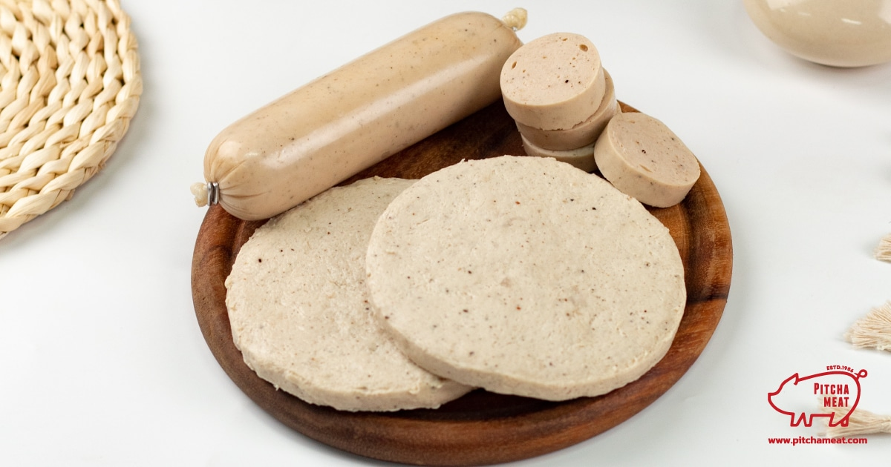
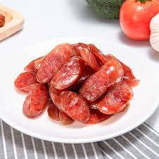

ภาคตะวันออกเฉียงเหนือหรือภาคอีสานได้รับอิทธิพลจากชาวจีนที่อพยพเข้ามาค้าขาย และตั้งรกรากในเมืองสำคัญหลายแห่ง เช่น นครราชสีมา อุดรธานี ขอนแก่น และอุบลราชธานี ทำให้วัฒนธรรมการกินของจีนผสมผสานกับอาหารพื้นบ้านของชาวอีสาน จนเกิดเมนูที่มีรสชาติและเอกลักษณ์เฉพาะตัว
ตัวอย่างอาหารที่ได้รับอิทธิพลจากจีน ได้แก่ กุนเชียง หมูยอ ก๋วยจั๊บ บะหมี่ และอาหารประเภทเส้นต่าง ๆ ซึ่งถูกนำมาปรับให้เข้ากับรสชาติแบบอีสาน โดยมีการเพิ่มเครื่องปรุง เช่น พริก น้ำปลา และสมุนไพรท้องถิ่น ทำให้มีรสชาติจัดจ้านและเป็นที่นิยมในปัจจุบัน

หมูยอ หมูยอเป็นอาหารที่มีต้นกำเนิดจากเวียดนามและถูกนำเข้ามาในประเทศไทยโดยชาวเวียดนามที่อพยพเข้ามาอาศัยในภาคอีสาน ทำจากเนื้อหมูบดละเอียดปรุงรส แล้วห่อด้วยใบตองก่อนนำไปนึ่งจนสุก หมูยอเป็นอาหารขึ้นชื่อของหลายจังหวัดในภาคอีสาน เช่น อุบลราชธานี หนองคาย อุดรธานี และนครพนม ปัจจุบันนิยมรับประทานทั้งแบบทอด ย่าง หรือใช้เป็นส่วนประกอบในก๋วยจั๊บญวนและอาหารอื่น ๆ
ก๋วยจั๊บญวน ก๋วยจั๊บญวนเป็นอาหารที่ได้รับอิทธิพลจากชาวเวียดนามที่อพยพเข้ามาตั้งถิ่นฐานในภาคตะวันออกเฉียงเหนือของประเทศไทย โดยเฉพาะจังหวัดอุบลราชธานี นครพนม และมุกดาหาร ลักษณะเด่นคือเส้นที่เหนียวนุ่ม น้ำซุปใสรสกลมกล่อม และมักใส่หมูยอเป็นส่วนประกอบสำคัญ ปัจจุบันก๋วยจั๊บญวนถือเป็นอาหารยอดนิยมของภาคอีสานและเป็นที่รู้จักทั่วประเทศ

กุนเชียง กุนเชียงเป็นอาหารที่ได้รับอิทธิพลจากชาวจีน โดยมีลักษณะเป็นไส้กรอกหมูปรุงรสหวานเค็มแล้วนำไปตากแห้งเพื่อถนอมอาหาร คำว่า "กุนเชียง" มาจากภาษาจีนแต้จิ๋ว หมายถึงไส้กรอก ชาวจีนได้นำวิธีการทำกุนเชียงเข้ามาเผยแพร่ในประเทศไทย ทำให้กลายเป็นอาหารที่นิยมรับประทานในหลายภูมิภาค รวมถึงภาคอีสาน ซึ่งมักนำมารับประทานคู่กับข้าวสวยหรือใช้ประกอบอาหารชนิดต่าง ๆ